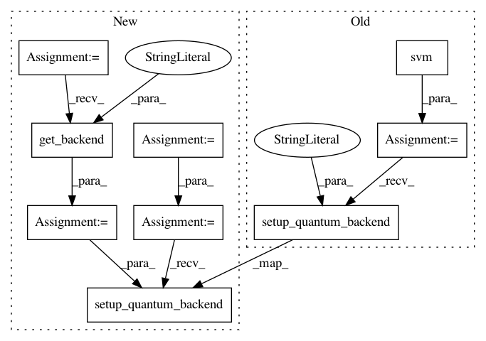

600633ca50dbae038f494162a67e3cab2a84b4b6,test/test_qsvm_kernel.py,TestQSVMKernel,test_qsvm_kernel_binary_directly_statevector,#TestQSVMKernel#,120
Before Change
def test_qsvm_kernel_binary_directly_statevector(self):
svm = get_pluggable_class(PluggableType.ALGORITHM,"QSVM.Kernel")
svm = svm()
svm.random_seed = self.random_seed
svm.setup_quantum_backend(backend="statevector_simulator")
num_qubits = 2
feature_map = get_pluggable_class(PluggableType.FEATURE_MAP,"SecondOrderExpansion")
feature_map = feature_map()
After Change
def test_qsvm_kernel_binary_directly_statevector(self):
backend = Aer.get_backend("statevector_simulator")
num_qubits = 2
feature_map = SecondOrderExpansion(num_qubits=num_qubits, depth=2, entangler_map={0: [1]})
svm = QSVM_Kernel(feature_map, self.training_data, self.testing_data, None)
svm.random_seed = self.random_seed
svm.setup_quantum_backend(backend=backend)
result = svm.run()
self.assertEqual(len(result["svm"]["support_vectors"]), 4)
np.testing.assert_array_almost_equal(
In pattern: SUPERPATTERN
Frequency: 3
Non-data size: 9
Instances
Project Name: Qiskit/qiskit-aqua
Commit Name: 600633ca50dbae038f494162a67e3cab2a84b4b6
Time: 2018-11-20
Author: chenrich@us.ibm.com
File Name: test/test_qsvm_kernel.py
Class Name: TestQSVMKernel
Method Name: test_qsvm_kernel_binary_directly_statevector
Project Name: Qiskit/qiskit-aqua
Commit Name: 600633ca50dbae038f494162a67e3cab2a84b4b6
Time: 2018-11-20
Author: chenrich@us.ibm.com
File Name: test/test_qsvm_kernel.py
Class Name: TestQSVMKernel
Method Name: test_qsvm_kernel_binary_directly
Project Name: Qiskit/qiskit-aqua
Commit Name: bd12ec54e6b360019c83311c8cc685c252e306d8
Time: 2018-11-19
Author: chenrich@us.ibm.com
File Name: test/test_qsvm_variational.py
Class Name: TestQSVMVariational
Method Name: test_qsvm_variational_directly